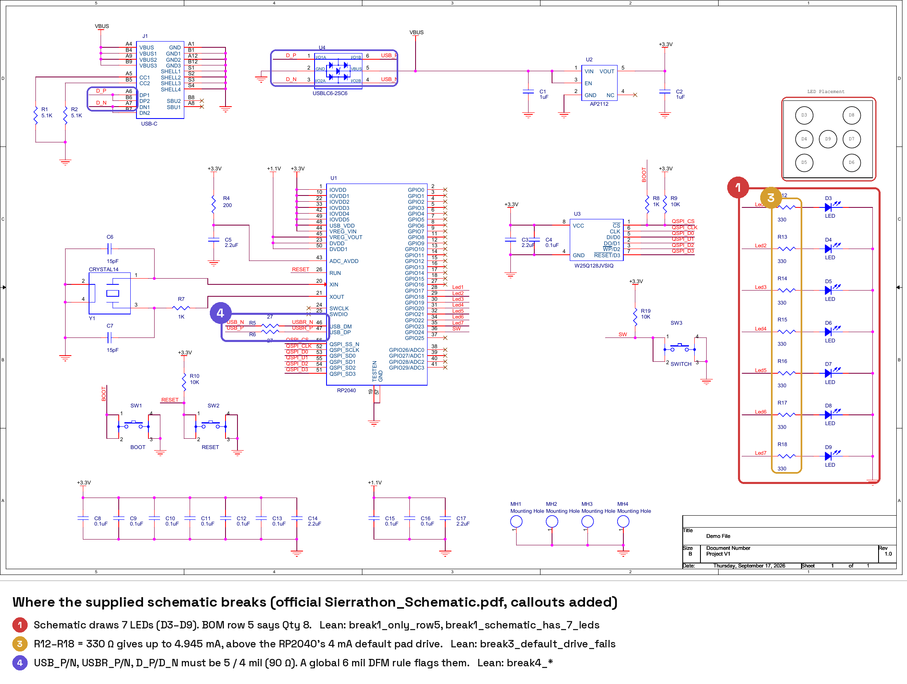
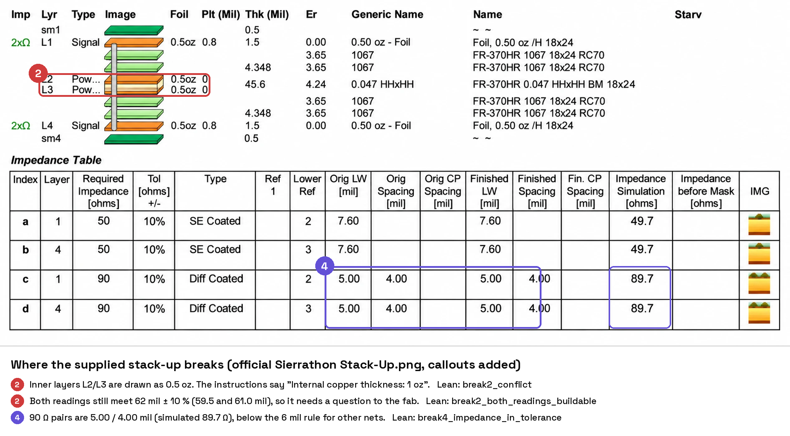
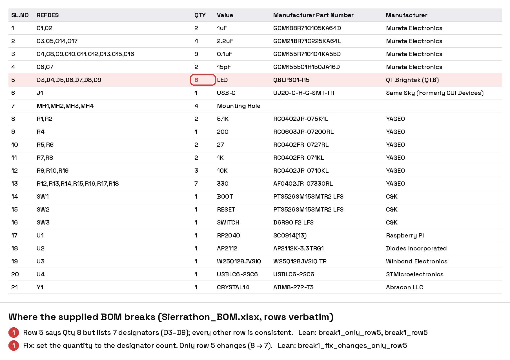

Does the 2D design really become the 3D board?
Pick a build, tweak it, and Lean answers for every component: GREEN proved, YELLOW buildable but needs an action, RED not the design you meant. The checker behind this page is the compiled Lean code, the same one the command line runs.
⊢The tool
Claude suggests ways to build the board. Lean rates each one. Lean's findings go back to Claude for the next round.
The design Sierrathon supplied is built in. You can also drop a KiCad board file.

Values from the supplied files
Decoupling capacitors (click to leave one off)
Footprint for each BOM row
Assembly mistakes to inject
| Check | Result | Detail |
|---|
How this was checked
leanchip, a binary compiled from LeanVsDFM/Check.lean. It runs reportK, the function the theorems are about. A component's colour is the worst finding that names it; comp_le_overall proves no component is worse than the overall verdict, and bodies_never_collide proves that when the fit check passes no two bodies overlap. For a kernel certificate of one board, run leancheck locally.⊢Test cases
Each expected verdict was written down first. The Lean checker then ran.
| Case | Expected | Lean says | Result |
|---|
⊢Kernel-certified runs
Real KiCad files in the repository, checked by leancheck and certified by the Lean kernel. Pick a board.
| Section | Check | Result | Detail |
|---|
51 scripted and AI builds, each one certified
⊢The 3D board
This is the STEP file KiCad exported from our placed board, with KiCad's own 3D part models and the manufacturer model for the flash chip. Drag to rotate, scroll or pinch to zoom.
Lean computes where each part's body lands from its placement, rotation and measured size. KiCad's exporter places the same models on its own. The two agree on all 49 body outlines to under 0.05 µm; heights differ by a fixed 50 µm. That comparison is a test, not a proof. The USB-C connector has no 3D model in KiCad's library, so it is missing here and shows as yellow in the report.
⊢How it works
What a DFM check looks at
What Lean looks at here
⊢Where the supplied package breaks
Four problems in the official Sierrathon files, marked on the files themselves. Each one is a Lean theorem.



⊢The proofs, as formulas
Each line is a theorem the Lean kernel has checked. The name on the right is the theorem in leanvsdfm/LeanVsDFM/.
⊢Figures
⊢With Claude Code
The repository ships slash commands and a skill, so you can ask in plain words. The commands and outputs below are real: they were run while this project was built with Claude Code.
/leancheck [board]/explore [n]/verify/board3d⊢Run it locally
You need Lean 4 (through elan) and KiCad 7 with its Python module. On Windows, use WSL with Ubuntu 24.04.
$ sudo apt install kicad kicad-footprints $ curl -sSf https://raw.githubusercontent.com/leanprover/elan/master/elan-init.sh | sh $ git clone https://github.com/hrahman12/SierraThon---LeanChip && cd SierraThon---LeanChip/leanvsdfm $ lake build # checks every proof $ python3 tools/leancheck.py pcb/sierrathon.kicad_pcb # green / yellow / red $ python3 tools/leancheck.py pcb/fault_led_reversed.kicad_pcb --html report.html
⊢What this does not do yet
- The board is placed, not routed. There are no traces yet, so there is no DRC result to show.
- Four parts use library stand-ins (USB-C J1, switches SW1 to SW3). Their manufacturer footprints and 3D models are needed; the report keeps them yellow until then.
- Bodies are checked as boxes (their measured bounding boxes), which is the conservative choice.
- The schematic was transcribed from the PDF by hand into a netlist. Lean checks the board against that netlist.
- Datasheet numbers are named assumptions in the Lean files. Change one and the build tells you which results still hold.